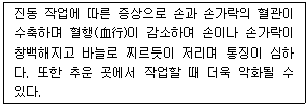
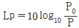
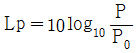
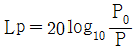
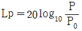
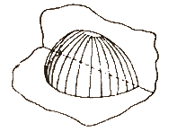
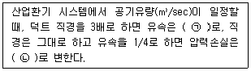
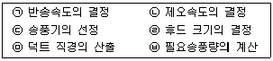

산업위생관리산업기사 (2019-03-03 기출문제)
1과목: 산업위생학 개론
1. 국제노동기구(ILO) 협약에 제시된 산업보건관리업무와 가장 거리가 먼 것은?
- 산업보건교육, 훈련과 정보에 관한 협력
- 작업능률 향상과 생산성 제고에 관한 기획
- 작업방법의 개선과 새로운 설비에 대한 건겅상 계획의 참여
- 직장에 있어서의 건강 유해요인에 대한 위험성의 확인과 평가
(정답률: 72%)

2. 산업피로의 종류 중, 관로 상태가 축적되어 단기간의 휴식으로는 회복할 수 없는 병적인 상태로, 심하면 사망에까지 이를 수 있는 것은?
- 곤비
- 피로
- 과로
- 실신
(정답률: 84%)
3. VDT 작업자세로 틀린 것은?
- 팔꿈치의 내각은 90도 이상이어야 함
- 발의 위치는 앞꿈치만 닿을 수 있도록 함
- 화면과 근로자의 눈과의 거리는 40cm 이상이 되게 함
- 의자에 앉을 때는 의자 깊숙이 앉아 의자등받이에 등이 충분히 지지되어야 함
(정답률: 85%)
4. 미국산업위생학회(AIHA)의 산업위생에 대한 정의로 가장 적합한 것은?
- 근로자나 일반대중의 육체적, 정신적, 사회적 건강을 고도로 유지 증진시키는 과학과 기술
- 작업조건으로 인하여 근로자에게 발생할 수 있는 질병을 근본적으로 예방하고 치료하는 학문과 기술
- 근로자나 일반대중에거 육체적, 생리적, 심리적으로 치적의 환경을 제공하여 최고의 작업능률을 높이기 위한 과학과 기술
- 근로자나 일반대중에게 질병, 건강장애와 안녕방해, 심각한 불쾌감 및 능률저하 등을 초래하는 작업환경 요인과 스트레스를 예측, 측정, 평가하고 관리하는 과학과 기술
(정답률: 85%)
5. NIOSH에서는 권장무게한계(RWL)와 최대허용한계(MPL)에 따라 중량물 취급 작업을 분류하고, 각각의 대책을 권고하고 있는데 MPL을 초과하는 경우에 대한 대책으로 가장 적절한 것은?
- 문제있는 근로자를 적절한 근로자로 교대시킨다.
- 반드시 공학적 방법을 적용하여 중량물 취급작업을 다시 설계한다.
- 대부분의 정상근로자들에게 적절한 작업조건으로 현 수준을 유지한다.
- 적절한 근로자의 선택과 적정배치 및 훈련, 그리고 작업방법의 개선이 필요하다.
(정답률: 79%)
6. 산업안전보건법령상 기관석면조사 대상으로서 건축물이나 설비의 소유주 등이 고용노동부장관에게 등록한 자로 하여금 그 석면을 해체·제거하도록 하여야 하는 함유량과 면적기준으로 틀린 것은?
- 석면이 1퍼센트(무게 퍼센트)를 초과하여 섬유된 분무제 또는 내화피복재를 사용한 경우
- 파이프에 사용된 보온재에서 석면이 1퍼센트(무게 퍼센트)를 초과하여 함유되어 있고, 그 보온재 길이의 합이 25미터 이상인 경우
- 석면이 1퍼센트(무게 퍼센트)를 초과하여 함유된 관련 규정에 해당하는 자재의 면적의 합이 15제곱미터 이상 또는 그 부피의 합이 1세제곱미터 이상인 경우
- 철거·해체하려는 벽체재료, 바닥재, 천장재 및 지붕재 등의 자재에 석면이 1퍼센트(무게 퍼센트)를 초과하여 함유되어 있고 그 자재의 면적의 합이 50제곱미터 이상인 경우
(정답률: 64%)
7. 화학물질의 분류·표시 및 물질안전보건자료에 관한 기준상 발암성 물지 구분에 있어 사람에게 충분한 발암성 증거가 있는 물질의 분류는?
- Ca
- A1
- C1
- 1A
(정답률: 66%)
8. 다음의 설명과 관련이 있는 것은?

- Raynaud's syndrome
- Carpal tunnel syndrome
- Thoracic outlet syndrome
- Multiple chemical sensitivity
(정답률: 89%)
9. 재해발생 이론 중, 하인리히의 도미노 이론에서 재해 예방을 위한 가장 효과적인 대책은?
- 사고 제거
- 인간결함 제거
- 불안전한 상태 및 행동 제거
- 유전적 요인과 사회환경 제거
(정답률: 84%)
10. 생물학적 모니터링의 대상물질과 대사산물의 연결이 틀린 것은?
- 카드뮴 : 카드뮴(혈중)
- 수은 : 총 무기수은(혈중)
- 크실렌 : 메틸마뇨산(소변중)
- 이황화탄소 : 카르복시헤모글로빈(혈중)
(정답률: 63%)
11. 피로의 예방대책으로 가장 거리가 먼 것은?
- 작업환경은 항상 정리, 정돈한다.
- 작업시간 중 적당한 때에 체조를 한다.
- 동적작업은 피하고 되도록 정적작업을 수행한다.
- 불필요한 동작을 피하고 에너지 소모를 적게 한다.
(정답률: 91%)
12. PWC가 16.5kcal/min 인 근로자가 1일 8시간 동안 물체를 운반하고 있다. 이때의 작업대사량은 10kcal/min 이고, 휴식 시의 대사량은 1.2kcal/min 이다. Hertig 의 식을 이용했을 때 적절한 휴식시간 비율은 약 몇 % 인가?
- 41
- 46
- 51
- 56
(정답률: 57%)
13. 세계 최초의 직업성 암으로 보고된 음낭암의 원인물질로 규명된 것은?
- 납(lead)
- 황(sulfur)
- 구리(copper)
- 검댕(soot)
(정답률: 86%)
14. 근육운동에 필요한 에너지는 혐기성 대사와 호기성 대사를 통해 생성된다. 혐기성과 호기성 대사에 모두 에너지원으로 작용하는 것은?
- 지방(fat)
- 단백질(protein)
- 포도당(glucose)
- 아데노신삼인산(ATP)
(정답률: 76%)
15. 사무실 실내환경의 복사기, 전기기구, 전기집진기형 공기정화기에서 주로 발생되는 유해 공기오염물질은?
- O3
- CO2
- VOCs
- HCHO
(정답률: 71%)
16. 메틸에틸케톤(MEK) 50 ppm(TLV 200 ppm), 트리클로로에틸렌(TCE) 25 ppm(TLV 50 ppm), 크실렌(Xylene) 30 ppm(TLV 100 ppm)이 공기 중 혼합물로 존재할 경우 노출지수와 노출기준 초과여부로 맞는 것은? (단, 혼합물질은 상가작용을 한다.)
- 노출지수 0.5, 노출기준 미만
- 노출지수 0.5, 노출기준 초과
- 노출지수 1.⑤, 노출기준 미만
- 노출지수 1.⑤, 노출기준 초과
(정답률: 84%)
17. 무게 10kg의 물건을 근로자가 들어 올리려고 한다. 해당 작업조건의 권고기준(RWL)이 5kg이고 이동거리가 20cm 일 때, 중량물 취급지수(LI)는 얼마인가? (단, 1분 2회씩 1일 8시간을 작업한다.)
- 1
- 2
- 3
- 4
(정답률: 72%)
18. 작업대사율이 4인 경우 실동율은 약 몇 % 인가? (단, 사이또와 오시마식을 적용한다.)
- 25
- 40
- 65
- 85
(정답률: 79%)
19. 산업피로의 발생요인 중 작업부하와 관련이 가장 적은 것은?
- 적응 조건
- 작업 강도
- 작업 자세
- 조작 방법
(정답률: 71%)
20. 상용 근로자 건강진단의 목적과 가장 거리가 먼 것은?
- 근로자가 가진 질병의 조기 발견
- 질병이완 근로자의 질병 치료 및 취업 제한
- 근로자가 일에 부적합한 인적 특성을 지니고 있는지 여부 확인
- 일이 근로자 자신과 직장동료의 건강에 불리한 영향을 미치고 있는지 여부의 발견
(정답률: 77%)
2과목: 작업환경측정 및 평가
21. 다음 중 작업장 내 소음을 측정 시 소음계의 청감보정회로로 옳은 것은? (단, 고용노동부 고시를 기준으로 한다.)
- A특성
- W특성
- E특성
- S특성
(정답률: 83%)
22. 가스 및 증기시료 채취 시 사용되는 고체흡착식 방식 중 활성탄에 관한 설명과 가장 거리가 먼 것은?
- 증기압이 낮고 반응성이 있는 물질의 분리에 사용된다.
- 제조과정 중 탄하과정은 약 600℃의 무산소 상태에서 이루어진다.
- 포집한 시료는 이황화탄소로 탈착시켜 가스크로마토그래피로 미량 분석이 가능하다.
- 사업장에 작업 시 발생되는 유기용제를 포집하기 위해 가장 많이 사용된다.
(정답률: 40%)
23. 작업장의 습도에 대한 설명으로 틀린 것은?
- 상대습도는 ppm 으로 나타낸다.
- 온도변화에 따라 상대습도는 변한다.
- 온도변화에 따라 포화수증기량은 변한다.
- 공기 중 상대습도가 높으면 불쾌감을 느낀다.
(정답률: 71%)
24. 먼지 입경에 따른 여과 메커니즘 및 채취효율에 관한 설명과 가장 거리가 먼 것은?
- 약 0.3μm 인 입자가 가장 낮은 채취효율을 가진다.
- 0.1μm 미만인 입자는 주로 간섭에 의하여 채취된다.
- 0.1μm ~ 0.5μm 입자는 주로 확산 및 간섭에 의하여 채취된다.
- 입자크기는 먼지채취효율에 영향을 미치는 중요한 요소이다.
(정답률: 60%)
25. 자동차 도장공정에서 노출되는 톨루엔의 측정 결과 85ppm 이고, 1일 10시간 작업한다고 가정할 때, 고용노동부에서 규정한 보정노출기준(ppm)과 노출평가결과는? (단, 톨루엔의 8시간 노출기준은 100ppm 이라고 가정한다.)
- 보정 노출기준 : 30, 노출평가결과 : 미만
- 보정 노출기준 : 50, 노출평가결과 : 미만
- 보정 노출기준 : 80, 노출평가결과 : 초과
- 보정 노출기준 : 125, 노출평가결과 : 초과
(정답률: 52%)
26. 가스상 물질의 시료 포집 시 사용하는 액체포집방법의 흡수효율을 높이기 위한 방법으로 옳지 않은 것은?
- 시료채취속도를 높여 채취유량을 줄이는 방법
- 채취효율이 좋은 프리티드 버블러 등의 기구를 사용하는 방법
- 흡수용액의 온도를 낮추어 오염물질의 휘발성을 제한하는 방법
- 두 개 이상의 버블러를 연속적으로 연결하여 채취효율을 높이는 방법
(정답률: 70%)
27. 다음 중 직경분립충돌기의 특징과 가장 거리가 먼 것은?
- 입자의 질량크기 분포를 얻을 수 있다.
- 시료채취가 용이하고 비용이 저렴하다.
- 흡입성, 흉곽성, 호흡성 입자의 크기별로 분포를 얻을 수 있다.
- 호흡기에 부분별로 침착된 입자크기의 자료를 추정할 수 있다.
(정답률: 67%)
28. 옥외 작업장(태양광선이 내리쬐는 장소)의 WBGT 지수 값은 얼마인가? (단, 자연습구온도 : 29℃, 건구온도 : 33℃, 흑구온도 : 36℃, 기류속도 : 1m/s 이고 고용노동부 고시를 기준으로 한다.)
- 29.7℃
- 30.8℃
- 31.6℃
- 32.3℃
(정답률: 79%)
29. 1,1,1-Trichloroethane 1750 mg/m3을 ppm 단위로 환산한 것은? (단, 25℃, 1기압, 1,1,1-Trichloroethane의 분자량은 133 이다.)
- 약 227 ppm
- 약 322 ppm
- 약 452 ppm
- 약 527 ppm
(정답률: 62%)
30. 기체크로마토그래피와 고성능액체크로마토그래피의 비교로 옳지 않은 것은?
- 기체크로마토그래피는 분석시료의 휘발성을 이용한다.
- 고성능액체크로마토그래피는 분석시료의 용해성을 이용한다.
- 기체크로마토그래피의 분리기전은 이온배제, 이온교환, 이온분배이다.
- 기체크로마토그래피의 이동상은 기체이고 고성능액체크로마토그래피의 이동상은 액체이다.
(정답률: 63%)
31. 납흄에 노출되고 있는 근로자의 납 노출농도를 측정한 결과 0.⑤6 mg/m3 이었다. 미국 OSHA의 평가방법에 따라 이 근로자의 노출을 평가하면? (단, 시료채취 및 분석오차(SAE) = 0.082 이고 납에 대한 허용기준은 0.⑤ mg/m3 이다.)
- 판정할 수 없음
- 허용기준을 초과함
- 허용기준을 초과하지 않음
- 허용기준을 초과할 가능성이 있음
(정답률: 64%)
32. 유사노출그룹을 가장 세분하게 분류할 때, 다음 중 분류 기준으로 가장 적합한 것은?
- 공정
- 조직
- 업무
- 작업범주
(정답률: 57%)
33. 다음 중 일반적인 사람이 들을 수 있는 가청 주파수 범위로 가장 적절한 것은?
- 약 2 ~ 2000 Hz
- 약 20 ~ 20000 Hz
- 약 200 ~ 200000 Hz
- 약 2000 ~ 2000000 Hz
(정답률: 76%)
34. 다음 입자상물질의 크기 표시 중 입자의 면적을 2등분하는 선의 길이로 과소평가의 위험이 있는 것은?
- 페렛 직경
- 마틴 직경
- 등면적 직경
- 공기역학적 직경
(정답률: 73%)
35. 여과지에 금속농도 100mg을 첨가한 후 분석하여 검출된 양이 80mg이었다면 회수율 몇 % 인가?
- 40
- 80
- 125
- 150
(정답률: 77%)
36. 공기 중 석면시료분석에 가장 정확한 방법으로 석면의 감별 분석이 가능하며 위상차 현미경으로 볼 수 없는 매우 가는 섬유도 관찰이 가능하지만, 값이 비싸고 분석시간이 많이 소요되는 방법은?
- X선 회절법
- 편광현미경법
- 전자현미경법
- 직독식현미경법
(정답률: 76%)
37. 탈착효율 실험은 고체흡착관을 이용하여 채취한 유기용제의 분석에 관련된 실험이다. 이 실험의 목적과 가장 거리가 먼 것은?
- 탈착효율의 보정
- 시약의 오염 보정
- 흡착관의 오염 보정
- 여과지의 오염 보정
(정답률: 53%)
38. 다음 중 활성탄관으로 포집한 시료를 열탈착할 때의 특징으로 옳은 것은?
- 작업이 번잡하다.
- 탈착효율이 나쁘다.
- 300℃ 이상 고온에서 사용 가능하다.
- 한 번에 모든 시료가 주입되어 여분의 분석물질이 남지 않는다.
(정답률: 57%)
39. 다음 중 표준기구에 관한 섬령으로 가장 거리가 먼 것은?
- 폐활량계는 1차 용량표준으로 자주 사용된다.
- 펌프의 유량을 보정하는데 1차 표준으로 비누거품 미터가 널리 사용된다.
- 1차 표준기구는 물리적 차원인 공간의 부피를 직접 측정할 수 있는 기구를 말한다.
- Wet-test meter(용량측정용)는 용량측정을 위한 1차 표준으로 2차 표준용량 보정에 사용된다.
(정답률: 65%)
40. 흡습성이 적고 가벼워 먼지의 중량분석, 유리규산채취, 6가 크롬 채취에 적용되는 여과지는?
- PVC 여과지
- 은막 여과지
- 유리섬유 여과지
- 셀루로오스에스테르 여과지
(정답률: 73%)
3과목: 작업환경관리
41. 방진마스크의 여과효율을 검정할 때 사용하는 먼지의 크기는 몇 μm 인가?
- 0.1
- 0.3
- 0.5
- 1.0
(정답률: 72%)
42. 다음 중 입자상 물질에 속하지 않는 것은?
- 흄
- 분진
- 증기
- 미스트
(정답률: 57%)
43. 다음 중 적외선에 관한 설명과 가장 거리가 먼 것은?
- 가시광선보다 긴 파장으로 가시광선에 가까운 쪽을 근적외선, 먼 쪽을 원적외선이라고 부른다.
- 적외선은 일반적으로 화학작용을 수반하지 않는다.
- 적외선에 강하게 노출되면 각막염, 백내장과 같은 장애를 일으킬 수 있다.
- 적외선은 지속적 적외선, 맥동적 적외선으로 구분된다.
(정답률: 45%)
44. 음압레벨이 80dB로 동일한 두 소음이 합쳐질 경우 총 음압레벨은 약 몇 dB 인가?
- 81
- 83
- 85
- 87
(정답률: 73%)
45. 다음 중 감압병 예방을 위한 환경 관리 및 보건관리 대책과 가장 거리가 먼 것은?
- 질소가스 대신 헬륨가스를 흡입시켜 작업하게 한다.
- 감압을 가능한 한 짧은 시간에 시행한다.
- 비만자의 작업을 금지시킨다.
- 감압이 완료되면 산소를 흡입시킨다.
(정답률: 67%)
46. 다음 중 한랭작업장에서 위생상 준수해야 할 사항과 가장 거리가 먼 것은?
- 건조한 양말의 착용
- 적절한 온열장치 이용
- 팔다리 운동으로 혈액순환 촉진
- 약간 작은 장갑과 방한화의 착용
(정답률: 84%)
47. 밀폐공간에서 작업할 때 관리 방법으로 옳지 않은 것은?
- 비상 시 탈출할 수 있는 경로를 확인 후 작업을 시작한다.
- 작업장에 들어가기 전에 산소농도와 유해물질의 농도를 측정한다.
- 환기량은 급기량이 배기량보다 약 10% 많게 한다.
- 산소결핍 및 황화수소의 노출이 과도하게 우려되는 작업장에서는 방독마스크를 착용한다.
(정답률: 80%)
48. 다음 중 비타민 D의 형성과 같이 생물학적 작용이 활발하게 일어나게 하는 Dorno 선과 가장 관계있는 것은?
- UV-A
- UV-B
- UV-C
- UV-S
(정답률: 66%)
49. 1/1 옥타브밴드의 중심주파수가 500Hz일 때, 하한과 상한 주파수로 가장 적합한 것은? (단, 정비형 필터 기준으로 한다.)
- 354 Hz, 707 Hz
- 362 Hz, 724 Hz
- 373 Hz, 746 Hz
- 382 Hz, 764 Hz
(정답률: 47%)
50. 분진흡입에 따른 진폐증 분류 중 유기성 분진에 의한 진폐증은?
- 규폐증
- 주석폐증
- 농부폐증
- 탄소폐증
(정답률: 57%)
51. 입자상 물질이 호흡기 내로 침착하는 작용기전이 아닌 것은?
- 침강
- 확산
- 회피
- 충돌
(정답률: 79%)
52. 작업장에서 훈련된 착용자들이 적절히 밀착이 이루어진 호흡기 보호구를 착용하였을 때, 기대되는 최소 보호정도치는?
- 정도보호계수
- 밀착보호계수
- 할당보호계수
- 기밀보호계수
(정답률: 68%)
53. 인공조명의 조명방법에 관한 설명으로 옳지 않은 것은?
- 간접조명은 강한 음영으로 분위기를 온화하게 만든다.
- 간접조명은 설비비가 많이 소요된다.
- 직접조명은 조명효율이 크다.
- 일반적으로 분류하는 인공적인 조명방법은 직접조명, 간접조명, 반간접조명 등으로 구분할 수 있다.
(정답률: 65%)
54. 다음 중 음압레벨(Lp)을 구하는 식은? (단, P : 측정되는 음압, P0 : 기준음압)




(정답률: 67%)
55. 다음 그림에서 음원의 방향성(directivity)은?

- 1
- 2
- 3
- 4
(정답률: 64%)
56. 다음 중 방진마스크의 종류가 아닌 것은?
- 0급
- 1급
- 2급
- 특급
(정답률: 83%)
57. 다음 중 작업과 관련 위생 보호구가 올바르게 짝지어진 것은?
- 전기 용접 작업 - 차광안경
- 분무 도장작업 – 방진 마스크
- 갱내의 토석 굴착 작업 – 방독 마스크
- 철판 절단을 위한 프레스 작업 – 고무제 보호의
(정답률: 74%)
58. 다음 중 먼지 시료를 채취하는 여과지 선정의 고려사항과 가장 거리가 먼 것은?
- 여과지 무게
- 흡습성
- 기계적인 강도
- 채취효율
(정답률: 55%)
59. 이상기압에 관한 설명으로 옳지 않은 것은?
- 수면 하에서의 압력은 수심이 10m가 깊어질 때마다 약 1기압씩 높아진다.
- 공기 중의 질소 가스는 2기압 이상에서 마취 증세가 나타난다.
- 고공성 폐수종은 어른보다 어린이에게 많이 일어난다.
- 급격한 감압 조건에서는 혈액과 조직에 용해되어 있던 질소가 기포를 형성하는 현상이 일어난다.
(정답률: 73%)
60. 다음 중 저온환경에서 발생할 수 있는 건강장해는?
- 감압증
- 산식증
- 고산병
- 참호족
(정답률: 77%)
4과목: 산업환기
61. 자유공간에 떠 있는 직경 20cm 인 원형개구후드의 개구면으로부터 20cm 떨어진 곳의 입자를 흡인하려고 한다. 제어풍속을 0.8 m/s로 할 때 필요환기량은 약 몇 m3/min 인가?
- 5.8
- 10.5
- 20.7
- 30.4
(정답률: 46%)
62. 산업환기 시스템에 대한 설명으로 틀린 것은?
- 원형덕트를 우선시 한다.
- 합류점에서 정압이 큰 쪽이 공기흐름을 지배하므로 지배정압(SP governing)이라 한다.
- 댐퍼를 이용한 균형방법은 주로 시설 설치 전에 댐퍼를 가지덕트에 설치하여 유량을 조절하게 된다.
- 후드 정압은 정지상태의 공기를 가속시키는데 필요한 에너지(속도압)와 난류손실의 합으로 표현된다.
(정답률: 49%)
63. 다음 중 원심력을 이용한 공기정화장치에 해당하는 것은?
- 백필터(bag filter)
- 스크러버(scrubber)
- 사이클론(cyclone)
- 충진탑(packed tower)
(정답률: 82%)
64. 전체환기시설의 설치조건으로 가장 거리가 먼 것은?
- 오염물질이 증기나 가스인 경우
- 오염물질의 발생량이 비교적 적은 경우
- 오염물질의 노출기준 값이 매우 작은 경우
- 동일한 작업장에 오염원이 분산되어 있는 경우
(정답률: 51%)
65. 다음의 내용에서 ㉠, ㉡에 해당하는 숫자로 맞는 것은?

- ㉠ : 1/3, ㉡ : 1/8
- ㉠ : 1/12, ㉡ : 1/6
- ㉠ : 1/6, ㉡ : 1/12
- ㉠ : 1/9, ㉡ : 1/16
(정답률: 54%)
66. 후드에서의 유입손실이 전혀 없는 이상적인 후드의 유입계수는 얼마인가?
- 0
- 0.5
- 0.8
- 1.0
(정답률: 63%)
67. 작업장 내의 열부하량이 200000 kcal/h 이며, 외부의 기온은 25℃ 이고, 작업장 내의 기온은 35℃ 이다. 이러한 작업장의 전체환기에 필요환기량(m3/min)은 약 얼마인가?
- 1100
- 1600
- 2100
- 2600
(정답률: 35%)
68. 유해가스의 처리방법 중, 연소를 통한 처리방법에 대한 설명이 아닌 것은?
- 처리경비가 저렴하다.
- 제거효율이 매우 높다.
- 저농도 유해물질에도 적합하다.
- 배기가스의 온도를 높여야 한다.
(정답률: 55%)
69. 급기구와 배기구의 직경을 d라고 할 때, 급기구와 배기구로부터 각각 일정거리에서의 유속이 최초 속도의 10%가 되는 거리는 얼마인가?
- 급기구 : 1d, 배기구 : 30d
- 급기구 : 2d, 배기구 : 10d
- 급기구 : 10d, 배기구 : 2d
- 급기구 : 30d, 배기구 : 1d
(정답률: 48%)
70. 보기를 이용하여 일반적인 국소배기장치의 설계순서를 가장 적절하게 나열한 것은?

- ㉥→㉡→㉢→㉣→㉤→㉠
- ㉥→㉢→㉡→㉠→㉣→㉤
- ㉢→㉡→㉣→㉠→㉥→㉤
- ㉡→㉥→㉠→㉤→㉣→㉢
(정답률: 53%)
71. 국소배기장치의 투자비용과 전력소모비를 적게 하기 위하여 최우선으로 고려하여야 할 사항은?
- 제어속도를 최대한 증가시킨다.
- 덕트의 직경을 최대한 크게 한다.
- 후드의 필요 송풍량을 최소화 한다.
- 배기량을 많게 하기 위해 발생원과 후드 사이의 거리를 가능한 한 멀게 한다.
(정답률: 70%)
72. 작업장의 크기가 세로 20m, 가로 30m, 높이 6m이고, 필요환기량이 120m3/min 일 때, 1시간당 공기교환 횟수는 몇 회인가?
- 1
- 2
- 3
- 4
(정답률: 53%)
73. 자연환기방식에 의한 전체환기의 효율은 주로 무엇에 의해 결정되는가?
- 풍압과 실내·외 온도차이
- 대기압과 오염물질의 농도
- 오염물질의 농도와 실내·외 습도 차이
- 작업자 수와 작업장 내부 시설의 위치
(정답률: 64%)
74. 전압, 속도압, 정압에 대한 설명으로 틀린 것은?
- 속도압은 항상 양압이다.
- 정압은 속도압에 의존하여 발생한다.
- 전압은 속도압과 정압을 합한 값이다.
- 송풍기의 전·후 위치에 따라 덕트 내의 정압이 음(-)이나 양(+)으로 된다.
(정답률: 63%)
75. 어느 공기정화장치의 압력손실이 300 mmH2O, 처리가스량이 1000m3/min, 송풍기의 효율이 80% 이다. 이 장치의 소요 동력은 약 몇 kW 인가?
- 56.9
- 61.3
- 72.5
- 80.6
(정답률: 51%)
76. 80℃에서 공기의 부피가 5m3 일 때, 21℃에서 이 공기의 부피는 약 몇 m3 인가? (단, 공기의 밀도는 1.2 kg/m3 이고, 기압의 변동은 없다.)
- 4.2
- 4.8
- 5.2
- 5.6
(정답률: 40%)
77. 송풍기의 바로 앞부분(up stream)까지의 정압이 –200 mmH2O, 뒷부분(down stream)에서의 정압이 10 mmH2O 이다. 송풍기의 바로 앞부분과 뒷부분에서의 속도압이 모두 8mmH2O 일 때 송풍기 정압(mmH2O)은 얼마인가?
- 182
- 190
- 202
- 218
(정답률: 36%)
78. 제어속도에 관한 설명으로 옳은 것은?
- 제어속도가 높을수록 경제적이다.
- 제어속도를 증가시키기 위해서 송풍기 용량의 증가는 불가피하다.
- 외부식 후드에서 후드와 작업지점과의 거리를 줄이면 제어속도가 증가한다.
- 유해물질을 실내의 공기 중으로 분산시키지 않고 후드 내로 흡인하는데 필요한 최대기류 속도를 의미한다.
(정답률: 41%)
79. 후드의 형태 중, 포위식이 외부식에 비하여 효과적인 이유로 볼 수 없는 것은?
- 제어풍량이 적기 때문이다.
- 유해물질이 포위되기 때문이다.
- 플랜지가 부착되어 있기 때문이다.
- 영향을 미치는 외부기류를 사방면에서 차단하기 때문이다.
(정답률: 60%)
80. 사염화에틸렌 10000 ppm 이 공기 중에 존재한다면 공기와 사염화에틸렌 혼합물의 유효비중은 얼마인가? (단, 사염화에틸렌의 증기비중은 5.7로 한다.)
- 1.0047
- 1.047
- 1.47
- 10.47
(정답률: 61%)